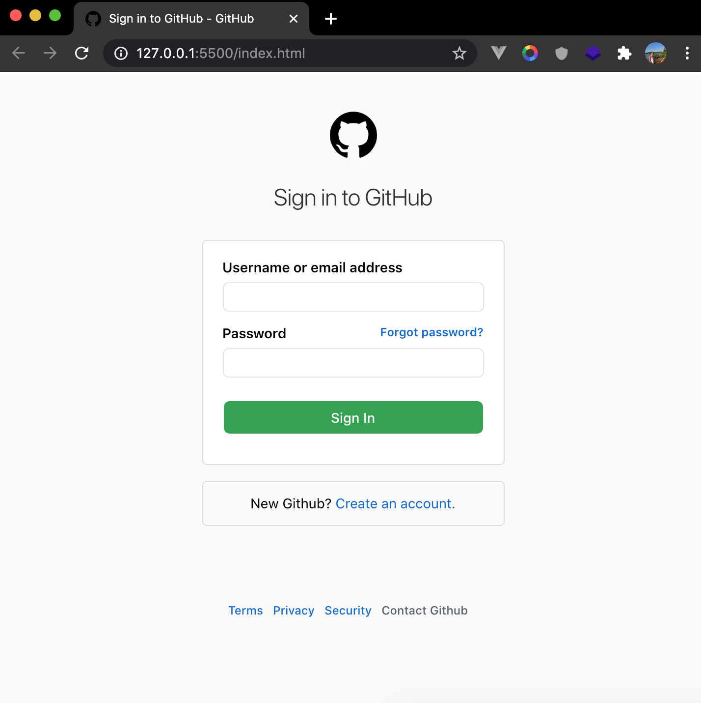
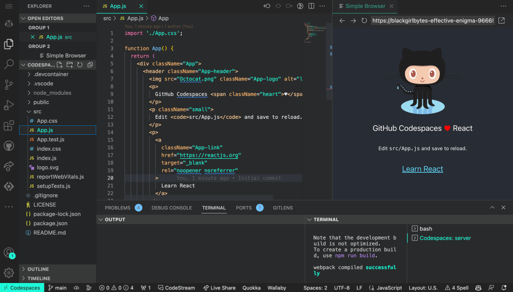

| Jak se zaregistrovat |
Odkaz na stránku |
Odkaz na tento repozitář |
| Klikněte zde! |
Klikněte zde! |
Klikněte zde! | ¨


GitHub je platforma pro verzování a správu kódu, která umožňuje týmovou spolupráci na softwarových projektech. Základem práce na GitHubu je Git, distribuovaný systém pro správu verzí, který sleduje změny v kódu. Na GitHubu vývojáři ukládají své projekty v tzv. repozitářích.
Práce začíná klonováním repozitáře, tedy stažením jeho aktuální verze na lokální počítač. Změny se provádějí lokálně a pomocí příkazu git commit se ukládají. Následně se změny odesílají zpět na server GitHubu pomocí příkazu git push.
Při spolupráci na projektech se často používají větve (branches), které umožňují práci na různých funkcích současně, aniž by se ovlivnila hlavní větev. Po dokončení práce je možné vytvořit pull request, což je žádost o sloučení změn zpět do hlavní větve.
GitHub také podporuje nástroje jako GitHub Actions pro automatizaci úkolů, Issues pro správu chyb a požadavků a Wiki pro dokumentaci projektu